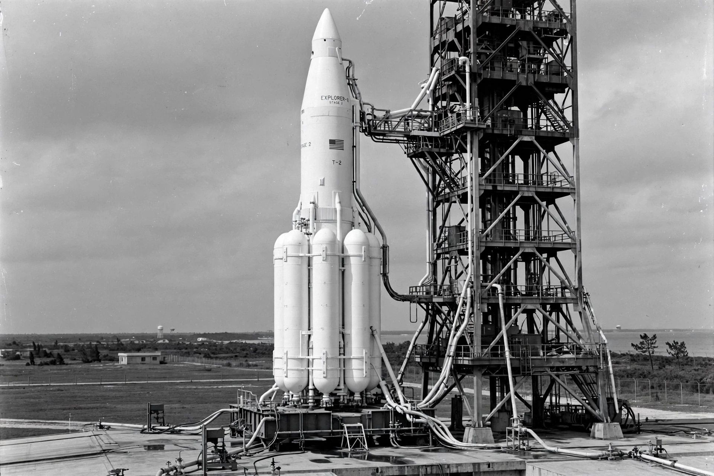

Saturn IB
From Wikipedia, the free encyclopedia
| Saturn IB | |
|---|---|
| Manufacturer | Chrysler / Douglas (stages) |
| First flight | 26 February 1966 |
| Payload (LEO) | ~18.6 tonnes |
| Flights | 9 (1966–1975) |

Saturn IB at the pad.The Saturn IB was an American two-stage launch vehicle developed by NASA's Marshall Space Flight Center as an interim heavy lifter for the Apollo program: a cluster of eight Redstone-derived tanks and H-1 engines forming its first stage, topped by the S-IVB second stage it shared with the mighty Saturn V. It could put the Apollo command and service module into Earth orbit for testing and crew missions.
Saturn IB flew the first crewed Apollo mission, Apollo 7 (1968), all three Skylab crew flights (1973), and the American side of the Apollo–Soyuz Test Project (1975). Between flagship uses it also launched uncrewed lunar-module and CSM tests.
Design
The clustered first stage (nicknamed "Cluster's Last Stand" by sceptics) proved reliable across all nine flights without a launch failure. The S-IVB, with its single J-2 engine and restart capability, doubled on Saturn V as the stage that sent Apollo to the Moon; one surplus S-IVB was converted into the Skylab workshop itself.